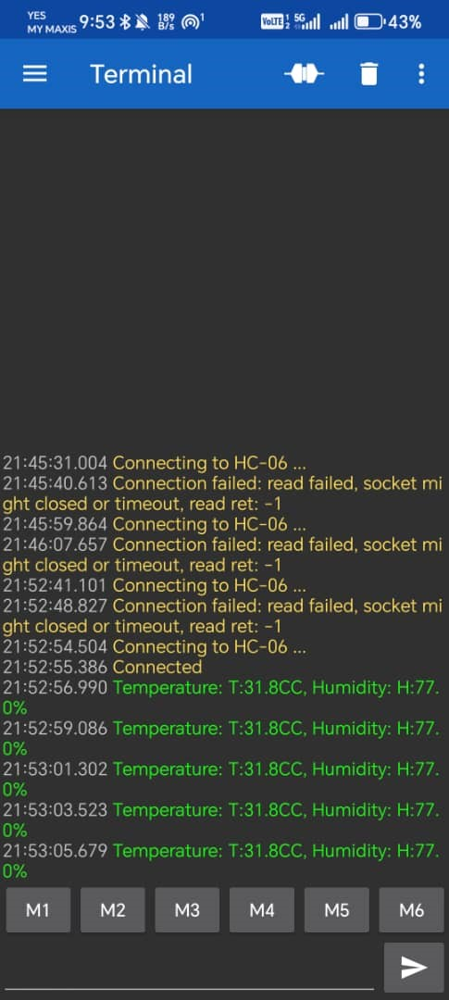

<!DOCTYPE html>
<html>
    <head>
        <title>Hatchery Monitoring</title>
        <link rel="stylesheet" href="../style.css">
    </head>
</html>
<body>
    <header class="project-head">
        
        <div><h3>Hatchery Monitoring System</h3></div>
        <div><a href="../main.html"> back to home</a></div>    
        
    </header>

    <main>
        <section class="overview">
        <h2>Description</h2>
        <div class="explaination">
            
            This project was inspired by the need to protect 
            endangered sea turtles in Malaysia. My group designed a smart 
            hatchery system that monitors and controls environmental 
            conditions crucial for turtle egg incubation. 
            The goal was to increase hatching success rates and 
            reduce human error, while enabling remote monitoring, 
            offline logging, and climate adaptation features.
        </div>
        <p><strong>Duration:</strong> 3 months (Team of 4)</p>
        <p><strong>My Role:</strong> Programmer</p>
        </section>
        
        <section class="features">
            <h2>Key features</h2>
            <div class="explanation">
                A microcontroller-based system designed to monitor and 
                maintain optimal environmental conditions for turtle eggs 
                in a hatchery. The system displays real-time temperature, 
                humidity, and light intensity, and provides 
                alerts through LEDs, LCD, and a buzzer to ensure egg safety.
                The system uses sensors (IR for movement, DHT11 for 
                temperature/humidity, LDR for light), actuators (LCD, LED, buzzer),
                and a Bluetooth module to optimize turtle egg incubation. 
                The microprocessor processes sensor data, controls outputs, 
                and enables alerts (LED for high heat, buzzer for movement) and 
                remote monitoring. A stable power source ensures reliable operation.
            </div>
            
            
        </section>
          
        <section class="components">
            <h2>Components Used</h2>
            <table>
                <tr>
                  <th>Components</th>
                  <th>Description</th>
                </tr>
                <tr>
                  <td>Microcontroller <p>(PIC16F887)</p></td>
                  <td>The central control unit that processes sensor data and controls outputs.</td>
                </tr>
                <tr>
                    <td>Temperature and Humidity <p>(DHT11 Sensor)</p></td>
                    <td>Measures temperature and humidity to ensure an optimal incubation 
                    environment.</td>
                </tr>
                <tr>
                    <td>Light Intesity <p>(LDT Sensor)</p></td>
                    <td>Detects light intensity to monitor hatchery lighting conditions.</td>
                </tr>
                <tr>
                    <td>Movement<p>(IR Sensor)</p></td>
                    <td>Detects movement near the hatchery, potentially indicating disturbances.</td>
                </tr>
                <tr>
                    <td>LCD Display <p>(LM016L, 16x2)</p></td>
                    <td>Shows real-time temperature, humidity, and light intensity readings.</td>
                </tr>
                <tr>
                    <td>LED Indicator</td>
                    <td>Signals high temperature conditions inside the hatchery.</td>
                </tr>
                <tr>
                    <td>Buzzer</td>
                    <td>Alerts when movement is detected in the hatchery area. </td>
                </tr>
                <tr>
                    <td>Bluetooth Module <p>(HC05)</p> </td>
                    <td>Transmits environmental data for remote monitoring using a mobile 
                        device or PC.</td>
                </tr>
                <tr>
                    <td>Power Supply<p>(From Laptop)</p> </td>
                    <td>Provides stable electrical power to the system. (5V)</td>
                </tr>
                
              </table>
        </section>

        <section class="tech">
            <h2>FlowChart</h2>
            
            <h2>Circuit assembly and it's explanation</h2>
            
            <iframe width="450" height="253" src="https://www.youtube.com/embed/pEDIwnYjUMs?si=1mZdAzsxFexrmC-u" title="YouTube video player" 
            frameborder="0" allow="accelerometer;
             autoplay; clipboard-write; encrypted-media; gyroscope; picture-in-picture; web-share" referrerpolicy="strict-origin-when-cross-origin" allowfullscreen>
            </iframe>
            <iframe width="450" height="253" src="https://www.youtube.com/embed/aICJHiIXsVU?si=rYTNU92B6EW6_OPa" title="YouTube video player" 
            frameborder="0" allow="accelerometer; autoplay; clipboard-write; encrypted-media; gyroscope; picture-in-picture; web-share" 
            referrerpolicy="strict-origin-when-cross-origin" allowfullscreen>
            </iframe>
        </section>

        <section class="Learning">
            <h3 style="color: #4CAF50;">💡 What I Learned</h3>
            <ul>
                <li>
                    <strong>🌡️ Sensor Integration & Real-Time Data Processing:</strong><br>
                    I dove into the world of sensors, mastering the art of interfacing multiple devices with a microcontroller. The DHT11 became my trusty companion for reading temperature and humidity, allowing me to display live environmental conditions on an LCD. I also learned the nuances of calibrating and interpreting analog data from the LDR to monitor light intensity—talk about illuminating insights!
                </li>
                <li>
                    <strong>🔄 Environmental Automation Logic:</strong><br>
                    I crafted a smart system that responds automatically to sensor readings. For instance, when the temperature soared above a safe threshold of 30°C, a red alert LED blazed to life, accompanied by a sound notification. Once the temperature returned to normal, the system gracefully reset, turning off the alert and reactivating the normal LED—like a guardian watching over its domain.
                </li>
                <li>
                    <strong>💡 Lighting Control with LDR Feedback:</strong><br>
                    I engineered a dynamic lighting control feature that adjusted LED brightness based on the surrounding light. In bright conditions, the internal lighting dimmed, while in darkness, the LEDs shone brighter. This experience taught me how to harness sensor data to enhance energy efficiency and elevate user experience—making every moment brighter!
                </li>
                <li>
                    <strong>🚶‍♂️ Simulated Motion Detection System:</strong><br>
                    Lacking an IR sensor, I got creative and simulated motion detection using a button to monitor activity near the hatchery. This experience highlighted the importance of prototyping with limited resources and how to mimic real-world inputs during the early stages of development—innovation at its finest!
                </li>
                <li>
                    <strong>🔔 Alert System & User Notification Design:</strong><br>
                    I designed a multi-sensory alert system that combined buzzers, LEDs, and LCD messages. Crafting conditions to activate alerts ensured they were user-friendly and noticeable in various scenarios (like overheating or motion detection). It was all about making sure the message got across loud and clear!
                </li>
                <li>
                    <strong>🔄 Embedded System Reliability & Reset Logic:</strong><br>
                    I implemented logic that allowed the system to reset automatically once unsafe conditions returned to normal, ensuring continuous and reliable monitoring. This required a careful balance of conditionals and state tracking within the microcontroller program—like a well-oiled machine!
                </li>
                <li>
                    <strong>🌍 Real-World Application Thinking:</strong><br>
                    Most importantly, I gained a profound understanding of how technology can aid conservation efforts. This project illuminated the fact that even basic embedded systems can play a pivotal role in protecting endangered species like turtles by enhancing hatchery conditions—making a difference, one byte at a time!
                </li>
            </ul>
        </section>

        <section>
            <h2>Appendix</h2>
            <div class="appendix-pic">
                
                
                
                <div>
                    
                    
                </div>
                
            </div>
        </section>   
        <video src="" alt="demo video"></video>
    </main>
</body>
